文件基本基础
[toc]
文件的基本概念
文件是计算机中长期存储在外部介质（如硬盘）上的信息集合，是用户与系统交互的基本数据单位（进程是资源调度的基本单位，文件是I/O交互的基本单位）。操作系统通过文件系统实现对文件的创建、访问、维护与管理，屏蔽底层存储细节，为用户提供便捷的操作接口。
文件的定义
从数据组织和管理角度，文件需包含三类核心信息，其结构可通过“自底向上”的层级定义：
- 数据项：文件系统中最低级的数据组织形式，是描述对象属性的最小逻辑单位。
- 基本数据项：单个属性值（如文件的“大小”“创建时间”）；
- 组合数据项：由多个基本数据项组成（如“用户信息”包含用户名、ID、权限）。
- 记录：一组相关数据项的集合，用于描述一个对象的完整属性（如学生档案中的“一条学生记录”，包含姓名、学号、成绩等）。
- 文件：由创建者定义、具有唯一文件名的一组相关元素集合，分为两类：
- 无结构文件：又称流式文件，视为连续的字符流（如.txt、.exe文件），访问单位为字节；
- 有结构文件：又称记录式文件，由若干相似记录组成（如数据库表文件），访问单位为记录。
文件的本质是“数据+管理信息”的结合，系统通过管理信息（如文件名、位置、权限）实现“按名存取”，无需用户关注数据在磁盘上的具体存储位置。
文件的属性
文件属性（又称文件元数据）是操作系统为管理文件而保存的附加信息，不包含文件实际数据，主要用于描述文件的特征与状态。不同系统的属性略有差异，但核心属性如下：
- 名称：唯一标识文件的字符串（如
note.txt），便于用户识别； - 类型：区分文件用途（如文本文件、可执行文件、目录文件），由文件系统解析；
- 所有者与创建者：记录文件的归属（用户ID/组ID），用于访问控制；
- 位置：指向文件在磁盘上的物理地址（如起始扇区号、索引块地址）；
- 大小：文件当前的字节数，部分系统还记录最大允许大小；
- 保护：访问控制信息（如读/写/执行权限），限制不同用户的操作；
- 时间戳：创建时间、最后修改时间、最后访问时间，用于跟踪文件生命周期。
文件的分类
为便于管理与访问，文件可按不同维度分类，常见分类方式如下：
- 按性质与用途：
- 系统文件：操作系统内核、驱动程序等核心文件（仅系统可修改，用户可只读/执行）；
- 用户文件：用户创建的个人数据文件（如文档、代码），用户拥有完整控制权；
- 库文件：编译好的函数库（如C语言的
stdio.h对应的库文件），供用户程序调用。
- 按数据形式：
- 源文件：人类可读的源代码文件（如
.c、.java文件）； - 目标文件：源文件编译后生成的二进制文件（如
.o文件），不可直接执行； - 可执行文件：目标文件链接后生成的可运行文件（如
.exe、Linux下的无后缀可执行文件）。
- 源文件：人类可读的源代码文件（如
- 按存取控制属性：
- 只读文件：仅允许读取，禁止修改/删除；
- 读/写文件：允许所有者读取与修改；
- 可执行文件：允许用户加载到内存运行（如程序文件）。
- 按组织形式与处理方式：
- 普通文件：存储数据的常规文件（如文本、图片）；
- 目录文件：用于管理其他文件的特殊文件（本质是FCB的集合）；
- 特殊文件：对应硬件设备的文件（如Linux的
/dev目录下的文件，用于与设备交互）。
文件控制块和索引节点
文件控制块（FCB）与索引节点（inode）是文件系统中描述文件属性与位置的核心数据结构，前者是传统方案，后者是优化方案（解决FCB检索效率低的问题）。
文件控制块
文件控制块（File Control Block，FCB） 是用于存储文件管理所需信息的数据结构，是“按名存取”的关键——每个文件对应唯一FCB，文件目录是FCB的有序集合（一个FCB即一个文件目录项，目录文件本质是存储FCB的文件）。
当创建新文件时，系统自动为其生成FCB；删除文件时，同步删除对应的FCB。
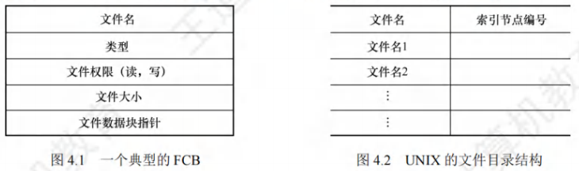
FCB主要包含以下信息
- 基本信息：文件名（唯一标识）、文件物理位置（如起始盘块号）、文件逻辑结构（流式/记录式）、文件物理结构（连续/链接/索引）；
- 存取控制信息：文件主权限（读/写/执行）、核准用户权限、普通用户权限（用于文件保护）；
- 使用信息：文件创建时间、最后修改时间、最后访问时间（跟踪文件使用状态）。
索引节点
传统FCB方案的缺陷：检索目录时，仅需“文件名”匹配，但FCB包含大量其他信息（如权限、时间），需将整个FCB调入内存，导致I/O开销大、检索效率低。
索引节点（inode）方案通过“文件名与文件描述信息分离”优化：目录项仅保留“文件名+inode编号”，文件的详细属性（如物理地址、权限）单独存储在inode中，大幅减少目录检索时的内存占用与I/O次数。
磁盘索引节点
存放在磁盘上的inode，是文件的“永久属性载体”，每个文件对应唯一磁盘inode，核心内容包括：
- 文件主标识符：文件所有者的用户ID/组ID；
- 文件类型：普通文件、目录文件、特殊文件（如设备文件）；
- 文件存取权限：不同用户（所有者/组/其他）的读、写、执行权限；
- 文件物理地址：通常包含13个地址项（如UNIX系统），以直接/间接方式记录数据块的盘块号；
- 文件长度：文件的字节数；
- 文件链接计数：指向该文件的目录项数量（硬链接数量）；
- 文件存取时间：最近访问时间、最近修改时间、
inode最近修改时间。
内存索引节点
当文件被打开时，磁盘inode会被复制到内存，形成内存inode，用于加速后续文件操作（避免重复读取磁盘）。内存inode在磁盘inode基础上增加以下内容：
- 索引节点号：标识内存中的
inode（与磁盘inode编号一致）； - 状态：标记
inode是否上锁（避免并发冲突）或被修改（需同步回磁盘）； - 访问计数：记录当前访问该
inode的进程数（进程打开文件时+1，关闭时-1）； - 逻辑设备号：文件所属文件系统的逻辑设备标识（如分区编号）；
- 链接指针：指向“空闲
inode链表”和“散列队列”的指针（用于inode的内存管理）。
文件的操作
文件操作通过操作系统的系统调用实现，核心围绕“文件的生命周期管理”与“数据访问”，关键操作包括创建、删除、读、写、打开、关闭等。
文件的基本操作
- 创建文件：需完成两步核心操作
- 为新文件分配外存空间（如磁盘块）；
- 在目录中新增目录项（FCB或“文件名+
inode号”），填入文件基本属性与存储位置。
- 删除文件：释放文件占用的资源
- 按文件名查找目录，定位对应的目录项；
- 删除目录项与FCB/
inode（若inode链接计数为0，彻底删除）； - 回收文件占用的磁盘块与内存缓冲区。
- 读文件：从文件中获取数据
- 按文件名查找目录，获取文件的物理地址（如起始块号、索引块地址）；
- 根据“读指针”（记录当前读取位置）读取指定长度的数据到内存；
- 读取后更新读指针（指向下次读取的起始位置）。
- 写文件：向文件中写入数据
- 按文件名查找目录，确认文件的写权限与物理地址；
- 根据“写指针”将内存数据写入外存；
- 写入后更新写指针与文件大小（若文件扩展，需分配新磁盘块）。
文件的打开
文件打开的核心目的是避免重复检索目录（多次操作同一文件时，仅首次需检索目录），具体逻辑如下：
- 用户调用
open()系统调用，传入文件名与访问模式（如只读、读写）； - 系统按文件名检索目录，找到对应的FCB或
inode； - 将FCB/
inode的关键信息（如物理地址、权限）复制到内存打开文件表的一个表项中； - 向用户返回该表项的索引号（称为文件描述符，Linux中为整数；Windows中称为“文件句柄”）；
- 后续对该文件的读、写操作，只需通过“文件描述符”访问内存打开文件表，无需再次检索目录。
文件的关闭
文件关闭的核心是“释放内存资源”，避免内存泄漏，同时确保数据一致性，涉及两级打开文件表的管理（系统级与进程级）：
两级打开文件表
- 系统级打开文件表：全局唯一，存储与进程无关的文件信息，包括FCB/
inode副本、文件物理地址、打开计数器（记录当前打开该文件的进程数）； - 进程级打开文件表：每个进程独立拥有，存储进程对文件的个性化信息，包括文件描述符、访问模式（如只读）、读写指针，以及指向“系统级打开文件表”对应表项的指针。
关闭流程
- 用户调用
close()系统调用，传入文件描述符； - 找到进程级打开文件表中对应的表项，删除该表项；
- 系统级打开文件表的“打开计数器”减1；
- 若打开计数器变为0（无进程访问该文件），删除系统级打开文件表中的对应表项，将修改后的FCB/
inode同步回磁盘（确保数据不丢失）。
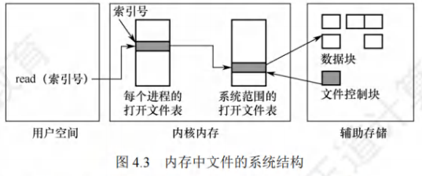
打开文件表的核心关联信息
每个打开文件的表项需维护以下关键信息，支撑文件操作：
- 文件指针：记录下次读/写的位置（进程私有，不同进程打开同一文件可拥有不同指针）；
- 打开计数器：跟踪打开文件的进程数，确保无进程访问时才释放系统资源；
- 文件磁盘位置：缓存文件的物理地址（如索引块号），避免每次操作都读取磁盘目录；
- 访问权限：记录进程打开文件时的权限（如只读），后续操作需校验权限（如禁止只读进程写文件）。
文件保护
文件保护的核心是控制用户对文件的存取权限，防止未授权访问、修改或删除，主要通过“限制访问类型”与“身份验证”实现，常见保护机制包括口令、加密、访问控制。
访问类型
首先定义需控制的文件操作类型，明确保护范围，核心访问类型如下：
- 读：从文件中读取数据（如打开.txt文件查看内容）；
- 写：向文件中修改或新增数据（如编辑文档）；
- 执行：将文件加载到内存并运行（如运行.exe程序）；
- 添加：仅在文件末尾新增数据（如日志文件追加内容）；
- 删除：删除文件及其占用的存储空间；
- 列表清单：查看文件名与文件属性（如
ls命令列出目录内容）。
高层操作（如重命名、复制）可通过底层访问类型组合实现（如复制文件需“读”原文件+“写”新文件），保护机制只需控制底层访问类型即可。
访问控制
访问控制是最常用的保护机制，基于“用户身份”决定权限，核心方案包括访问控制列表（ACL） 与精简ACL。
访问控制列表（ACL）
- 原理：为每个文件维护一张列表，记录“用户名/用户组”与“允许的访问类型”（如“用户A：读/写”“用户组B：读”）；
- 优点：支持复杂的权限配置（可精细到单个用户）；
- 缺点：列表长度不固定（若文件共享用户多，ACL会占用大量存储空间），管理复杂。
精简访问控制列表
为解决传统ACL的缺陷，精简ACL将用户分为三类，用固定长度的权限位表示，是目前主流方案（如Linux、UNIX采用）：
- 拥有者：创建文件的用户，拥有最高权限；
- 组用户：与拥有者同属一个用户组的用户，共享部分权限；
- 其他用户：系统中除上述两类外的所有用户，权限最低。
每类用户的权限用3个二进制位表示（分别对应“读（r）、写（w）、执行（x）”），共9位（如rwxr-xr--表示：拥有者读/写/执行，组用户读/执行，其他用户读）。
权限校验流程
- 用户访问文件时，系统先判断用户身份（拥有者/组用户/其他）；
- 读取该身份对应的权限位，校验当前操作是否允许（如用户为“其他”，操作是“写”，但权限位为“r–”，则拒绝）；
- 仅当权限匹配时，允许执行操作。
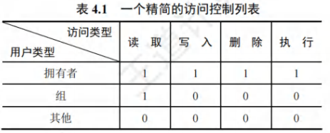
其他保护机制
- 口令保护：创建文件时设置口令，用户访问需输入正确口令才能解锁。优点是实现简单、开销小；缺点是口令存储在系统中（易被窃取），无法区分访问类型（知道口令即拥有所有权限）。
- 加密保护：用户对文件数据加密（如AES加密），访问时需解密密钥。优点是保密性强（即使文件被窃取，无密钥也无法读取）；缺点是加密/解密需消耗CPU资源，同样无法区分访问类型。
注：口令与加密仅防止“未授权读取”，无法控制“读/写/执行”的细粒度权限，通常需与访问控制结合使用。
文件的逻辑结构
文件的逻辑结构是从用户视角看到的文件组织形式，与存储介质无关，仅关注数据的逻辑组织方式，分为“无结构文件”和“有结构文件”两大类。
无结构文件
无结构文件又称流式文件，是最简单的逻辑结构：
- 本质：将数据视为连续的字符流（或字节流），无固定记录划分（如
.txt、.bin、.exe文件）； - 访问方式：通过“读写指针”定位，按字节访问（如读取第100~200字节的数据）；
- 优点：通用性强（适用于任何类型数据）、实现简单；
- 缺点：无结构化信息，检索特定数据（如某条记录）需穷举搜索，效率低（仅适合简单的读/写场景）。
有结构文件
有结构文件又称记录式文件，由若干“记录”组成（每个记录描述一个对象的属性），按记录长度可分为“定长记录”和“变长记录”：
- 定长记录：所有记录长度相同，数据项位置固定（如数据库表中每行记录长度一致），检索速度快（可直接计算记录地址）；
- 变长记录：记录长度不同（如日志文件中每条日志的字符数不同），检索需顺序查找前序记录的长度，效率低。
按记录的组织形式，有结构文件进一步分为以下四类：
顺序文件
记录按顺序排列（物理顺序与逻辑顺序一致），是最基础的有结构文件：
- 两种排列结构：
- 串结构：记录顺序与关键字无关（按存入时间排序），检索需从头顺序查找（如按时间存储的日志文件）；
- 顺序结构：记录按关键字排序（如学生记录按学号递增排序），定长记录可通过折半查找快速定位（效率高）。
- 优点：批量读/写效率高（连续存储，减少磁盘寻道），适合磁带等顺序存储介质；
- 缺点：单个记录的修改、插入、删除效率低（需移动大量记录），随机访问（非顺序访问）性能差。
索引文件
为解决变长记录顺序文件的检索效率问题，引入“索引表”辅助定位：
- 原理：
- 为主文件的每个记录建立一个索引项（包含记录的关键字、记录长度、记录物理地址）；
- 所有索引项按关键字排序，形成索引表（索引表是定长记录的顺序文件）；
- 检索时，先在索引表中查找关键字（折半查找），获取记录地址后直接访问主文件。
- 示例：变长记录主文件+索引表的结构如下：
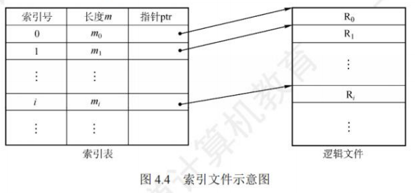
- 优点：解决变长记录的快速检索问题，支持随机访问；
- 缺点：需额外存储索引表，增加存储空间开销（每个记录对应一个索引项）。
索引顺序文件
结合“顺序文件”与“索引文件”的优点，平衡检索效率与存储开销：
- 原理：
- 将主文件的记录分为若干组（如每组100条记录），组内记录可无序，但组间按关键字排序；
- 为每组的第一个记录建立索引项（包含该组首个记录的关键字、物理地址），形成索引表（定长顺序文件）；
- 检索时：先查索引表确定记录所在的组（顺序/折半查找），再在组内顺序查找记录。
- 示例：按姓名首字母分组的索引顺序文件如下：
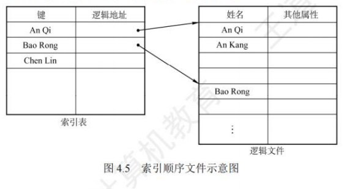
- 效率计算：设主文件共N条记录，分为组（每组条记录），检索平均次数为（索引表）+（组内）=，远低于顺序文件的；
- 优点：检索效率高于顺序文件，存储开销低于索引文件（仅组首记录建索引）；
- 缺点：组内记录仍需顺序查找，不适合超大规模文件（可通过多级索引优化）。
直接文件或散列文件（Hash File）
通过散列函数直接将记录的关键字映射为物理地址，实现“关键字→地址”的直接映射：
- 原理：
- 定义散列函数，输入关键字，输出对应的磁盘块地址；
- 存储记录时，将记录直接写入指向的磁盘块；
- 检索记录时，通过计算地址，直接访问磁盘块。
- 优点：存取速度极快（平均O(1)时间复杂度），适合频繁随机访问的场景（如数据库索引）；
- 缺点：存在散列冲突（不同关键字映射到同一地址），需通过“拉链法”“线性探测法”等方式解决，冲突严重时效率下降。
文件的物理结构
文件的物理结构（又称存储结构）是数据在外部存储介质（如磁盘）上的实际存储组织形式，决定文件的存取效率，核心是“如何分配磁盘块”（连续、链接、索引三种分配方式）。
注：文件物理结构关注“磁盘块的分配与管理”，文件存储空间管理关注“空闲磁盘块的管理”（如位示图、成组链接法），两者共同构成外存管理的核心。
连续分配
连续分配是最简单的物理结构，要求文件的所有磁盘块连续存储：
- 实现逻辑：
- 为文件分配一组连续的磁盘块（如块号10~15）；
- 文件目录项中记录“起始块号”（10）和“块数”（6）；
- 访问文件第i块时，直接计算物理块号：（如第3块对应10+3-1=12）。
- 示例：连续分配的磁盘块分布如下：
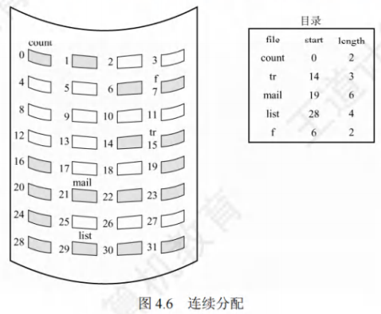
- 优点：
- 支持顺序访问和随机访问（直接计算地址）；
- 顺序访问速度最快（连续存储，减少磁盘寻道时间）。
- 缺点：
- 存在外部碎片（零散的空闲块无法拼接，浪费空间）；
- 文件拓展困难（需找到相邻的空闲块，否则需移动整个文件）；
- 需预先知道文件大小（无法动态分配块）。
链接分配
链接分配采用离散分配方式，文件的磁盘块可分散存储，通过“指针”串联成链，分为“隐式链接”和“显式链接”两种。
隐式链接
- 实现逻辑：
- 文件目录项记录“首块号”和“尾块号”；
- 每个磁盘块的末尾存储“下一块的指针”（指向下一个磁盘块的块号），尾块指针设为特殊值（如-1）；
- 访问文件时，从首块开始，通过指针依次访问后续块。
- 示例：隐式链接的磁盘块链如下：
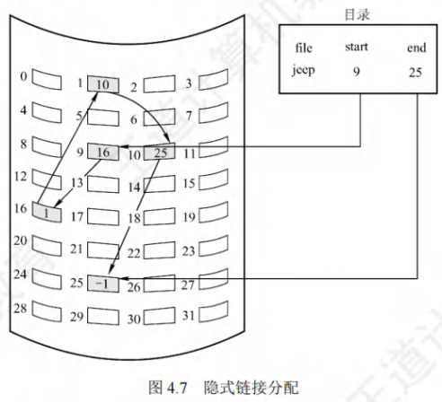
- 优点：
- 无外部碎片（离散分配，充分利用空闲块）；
- 文件可动态拓展（无需连续块，新增块只需修改尾块指针）。
- 缺点：
- 仅支持顺序访问（随机访问需从头遍历链，效率低）；
- 指针占用磁盘空间（每个块需额外存储指针）；
- 稳定性差（某块指针损坏会导致后续块丢失，如“断链”）。
优化：按簇分配
将多个连续磁盘块（如4块）视为一个“簇”，按簇分配而非按块分配，减少指针数量（簇内块连续，只需一个指针指向簇），提升访问效率，但会产生内部碎片（簇内未用完的空间）。
显式链接
- 实现逻辑：
- 整个磁盘建立一张文件分配表（FAT），FAT表项与磁盘块一一对应，每个表项存储“下一块指针”（空闲块指针设为-2，尾块指针设为-1）；
- 文件目录项仅记录“首块号”；
- 访问文件时，通过首块号查FAT，依次获取后续块号（FAT常驻内存，检索在内存中进行）。
- 示例：显式链接的FAT结构如下：
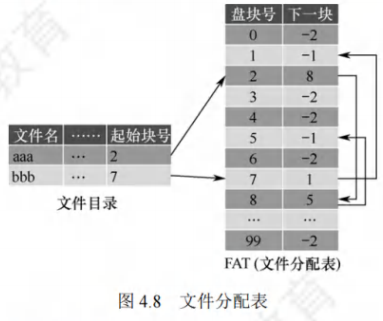
- 优点：
- 支持顺序访问和随机访问（FAT在内存，可快速定位块号）；
- 无外部碎片，文件拓展方便；
- 稳定性高于隐式链接（FAT集中管理指针，损坏可修复）。
- 缺点：
- FAT需占用内存空间（磁盘容量越大，FAT表越大）；
- 大文件检索需多次查询FAT（效率略低于索引分配）。
索引分配
索引分配为每个文件建立一张索引表（存储文件所有磁盘块的块号），解决连续分配的碎片问题和链接分配的随机访问问题，分为“单级索引”“多级索引”“混合索引”三种。
单级索引分配方式
- 实现逻辑：
- 为每个文件分配一个“索引块”（专门存储该文件的磁盘块号，即索引表）；
- 文件目录项记录“索引块号”；
- 访问文件第i块时，先读索引块，获取第i块的块号，再访问该磁盘块。
- 示例：单级索引的结构如下：
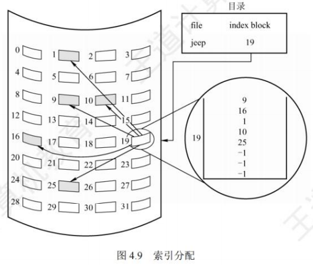
- 优点：
- 支持随机访问（直接查索引表）；
- 无外部碎片，文件拓展方便（新增块只需在索引表中添加块号）。
- 缺点：
- 索引块占用存储空间（即使文件很小，也需分配一个索引块，存在空间浪费）；
- 大文件需多个索引块（单级索引无法满足，需多级索引）。
多级索引分配方式
当文件太大（单级索引块无法存储所有块号）时，为索引块再建立索引，形成“多级索引”：
- 实现逻辑：
- 一级索引：索引块存储文件数据块的块号；
- 二级索引：第一级索引块存储“二级索引块的块号”，二级索引块存储数据块的块号；
- 多级索引以此类推（如三级、四级），通过“索引链”定位数据块。
- 示例：二级索引的结构如下：
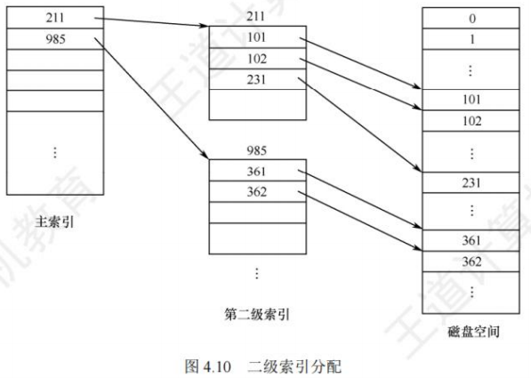
- 优点：支持超大文件存储（如二级索引可表示个数据块，按4KB块计算，支持4GB文件）；
- 缺点：访问数据块需多次读取索引块（如二级索引需读“一级索引块→二级索引块→数据块”），磁盘I/O次数多，小文件访问效率低。
混合索引分配方式
结合“直接地址”“单级索引”“多级索引”的优点，兼顾小、中、大、超大文件的访问效率，是目前主流的分配方式（如UNIX系统采用）。
以UNIX的inode为例，inode包含13个地址项（i.addr(0)~i.addr(12)），分别对应不同的分配方式：
- 示例：混合索引的地址项结构如下：
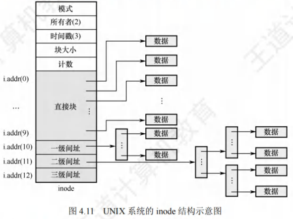
-
直接地址（
i.addr(0)~i.addr(9)）：共10个地址项，直接存储数据块的块号。- 适用场景：小文件（如块大小4KB，10块可存储40KB）；
- 优点：无需访问索引块，直接定位数据块，效率最高。
-
一次间接地址（
i.addr(10)）：存储“一级索引块的块号”，一级索引块存储数据块的块号。- 容量计算：若索引块可存1024个块号，支持；
- 适用场景：中文件（40KB~4.04MB）。
-
二次间接地址（
i.addr(11)）：存储“二级索引块的块号”，二级索引块存储一级索引块的块号，一级索引块存储数据块的块号。- 容量计算：；
- 适用场景：大文件（4.04MB~4.004GB）。
-
三次间接地址（
i.addr(12)）：存储“三级索引块的块号”，通过三级索引链定位数据块。- 容量计算：；
- 适用场景：超大文件（4.004GB~4.004TB）。
- 优点：按需选择分配方式，小文件效率高，大文件容量足，兼顾各类场景；
- 缺点：实现逻辑复杂（需管理不同层级的索引块），超大文件访问需多次I/O。